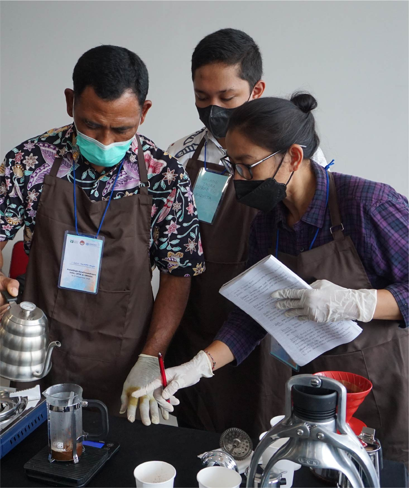

United Nations In Indonesia
Country Results Report 2021
Advancing Policies to Prevent
Violent Extremism

Violent extremist groups have sought to capitalise on the social isolation and economic adversity the COVID-19 pandemic inflicted upon Indonesia, which contributes to conditions that allow dangerous and divisive narratives to prosper, a Feb 2021 UNODC report found. The report praised the Government’s approach to preventing violent extremism (PVE) but underscored the need for flexible policy solutions to mitigate the evolving threat.
UN support for the National Action Plan on Prevention of Violent Extremism comes principally through The Guyub Project, which means “togetherness” in Javanese. Guyub operates under the UN’s innovative, multi-stakeholder Peace Hub structure. Upon the completion of its second year of implementation in 2021, Guyub had reached more than 140,000 beneficiaries as of November 2021 through online advocacy materials including a podcast and content posted to social media. Through Guyub and Peace Hub, the UN works closely with Indonesia’s National Counter-Terrorism Agency and the Indonesian National Police force on law enforcement engagement with the community to prevent violent extremism.
UN agencies working with the government through Guyub also made progress on assuring the rights of victims and witnesses of terrorism in 2021, a crucial component to breaking the cycle of violence. For example, the UN supported the National Witness and Victim Agency (LPSK) on public campaigns and vocational training for historical victims of terrorism who are entitled to compensation and support. The public campaign resulted in hundreds of applications received by LSPK, which awarded state compensation to 252 survivors of terrorism in 2021, with hundreds more expected to receive compensation in 2022. Some 61 of the survivors who were awarded compensation also received training in entrepreneurial and vocational skills.
Through the Peace Hub, the UN used its convening power to broaden civic engagement on PVE and ensure that interventions are gender sensitive. For example, in 2021 the UN partnered with The Asian Muslim Action Network (AMAN Indonesia), and the Working Group on Women and Preventing/Countering Violent Extremism (WGWC) to help mainstream gender in PVE interventions related to the National Action Plan on Women, Peace, and Security. AMAN in turn coordinated with the Ministry of Women’s Empowerment and Child Protection, and the Ministry of Home Affairs, on an appropriate provincial governance structure to implement the National Action Plans on PVE at the national and regional levels.